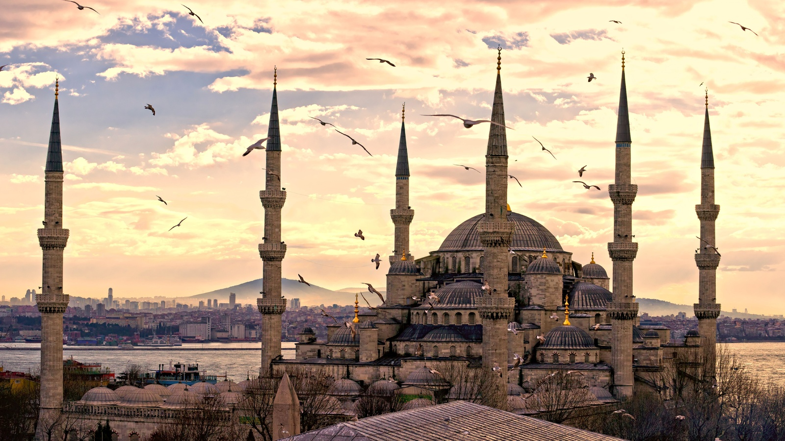
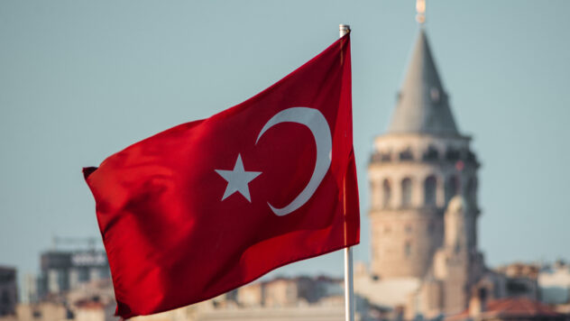
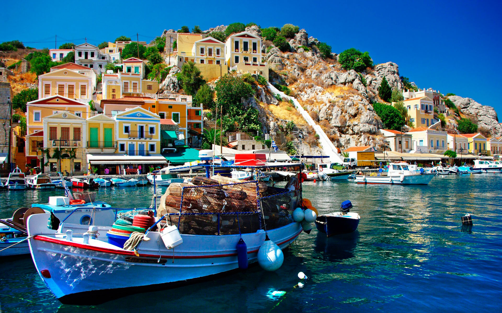
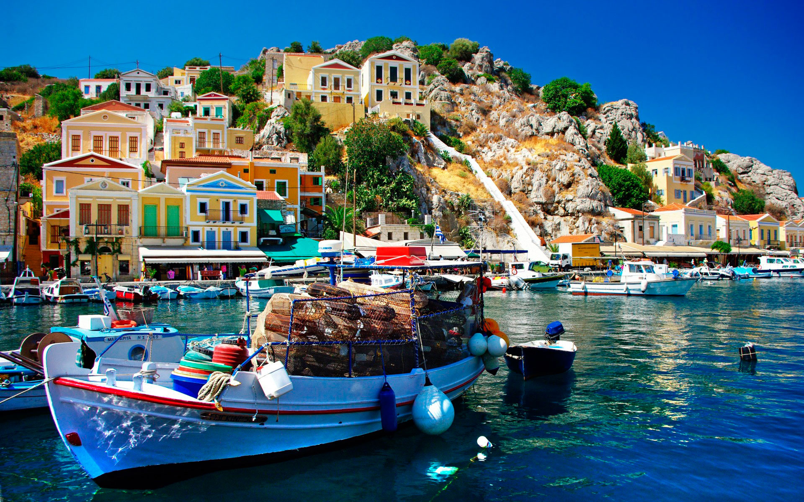
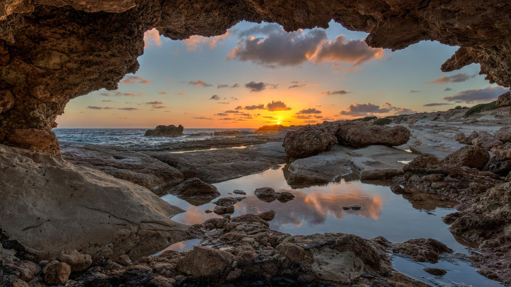
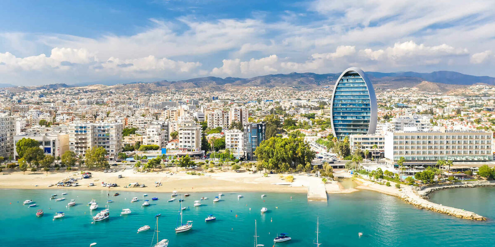
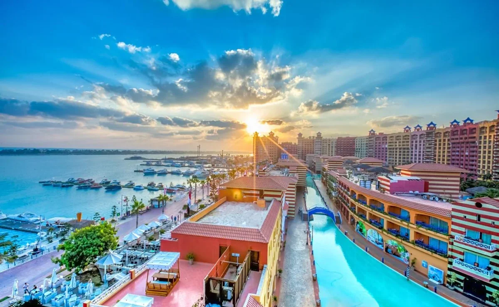
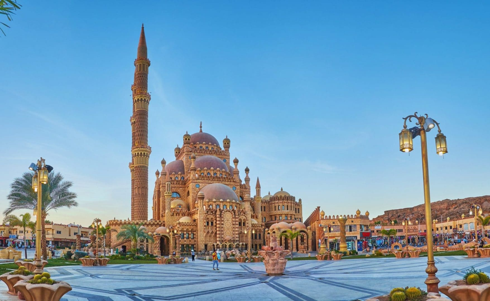
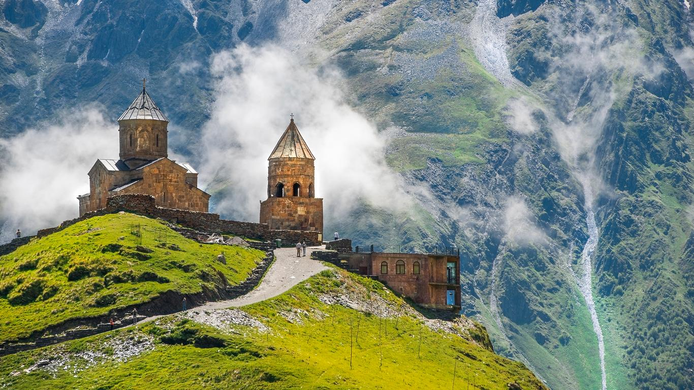
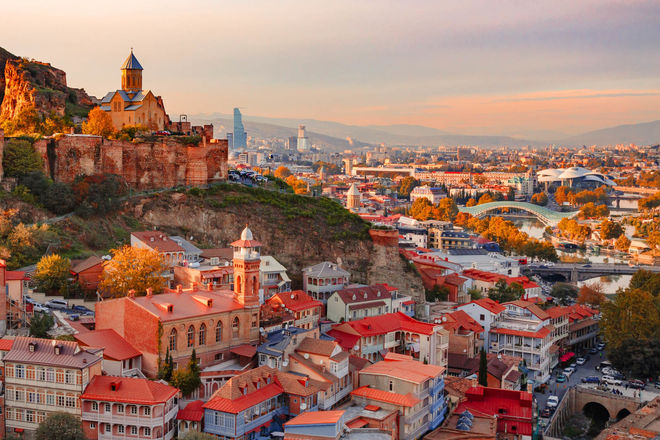

Літо – найкращий час для подорожей всією родиною, адже нічого так не обʼєднує, як спільні пригоди. Мандрівка подарує вам яскраві враження, дозволить дослідити нові місця та якісно провести час з близькими.
Якщо Ви ще не забронювали свою наступну сімейну відпустку, то радимо Вам ознайомитись з нашим топ 10 найкращих країн для відпустки з дітьми.
Топ 5 країн для відпочинку
• 1 місце - Туреччина
Топ 5 країн для відпочинку відкриває один з найпопулярніших напрямів для мандрів – Туреччина. Це місце відкрито для туристів з будь-яким бюджетом та інтересами. В цьому куточку планети всім бажаючим пропонують яскраві та колоритні сувеніри, пляжі, місцеві делікатеси, вродливі природні пейзажі та активні види відпочинку.
В’їзд та виїзд для українців не має обмежень. Для комфортного розташування на вибір даються десятки готелів різного рівня. Особливістю країни є її колорит, східні ринки, торгові лавки, античні містечка й витончена кухня.


• 2 місце - Греція
Безсумнівний плюс цієї країни – великий вибір курортів! Що б ви не обрали, скрізь вас чекатиме тепле море, приємний клімат і смачна їжа. Переліт до Греції недорогий, а ось, що стосується самого проживання в готелі, то тут доведеться витратитися. Проте обрати бюджетний варіант теж реально. До того ж відстань між Україною та Грецією зовсім незначна.
Грецькі острови чудово підійдуть для спокійного і розміреного відпочинку українського туриста. У Греції великий вибір курортів!
 

• 3 місце - Кіпр
Неймовірної краси острів стає все популярнішим серед українських туристів. Середземне море, піщаний берег і великий вибір готелів!
Переліт до Кіпру зовсім недорогий і короткий. До того ж отримати візу можна не виходячи з дому – через Інтернет!
Відпочинок підійде для тих, хто любить ніжитися в сонячних променях на березі моря, попиваючи коктейль, так як екскурсійна програма тут різноманітна. Однак подивитися тут буде що! На території острова споруджені храми та інші релігійні пам’ятки.


• 4 місце - Єгипет
Звісно ж, найбільше у Єгипті приваблює краса Червоного моря і коралових рифів. Туристична інфраструктура тут на високому рівні.
Єгипет підійде для людей різного матеріального становища і різного віку. Спека тут переноситься легше через сухий клімат.


• 5 місце - Грузія
Для відпочинку в Грузії віза українцям не потрібна! Вас чекає субтропічний клімат і узбережжя Чорного моря.
У цій країні славляться цілющими властивостями пляжі курорту Анаклії, адже вони покриті магнітним піском.
Звісно, їхати сюди варто, щоб подивитися на красу природи і місцеві визначні пам’ятки. Крім цього, у Грузії є джерела з мінеральною водою. Їх видів понад 730! Окремо слід відзначити місцеву кухню.

